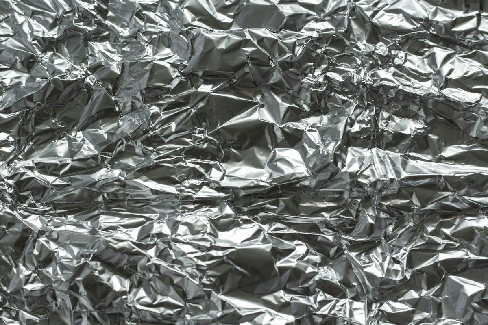
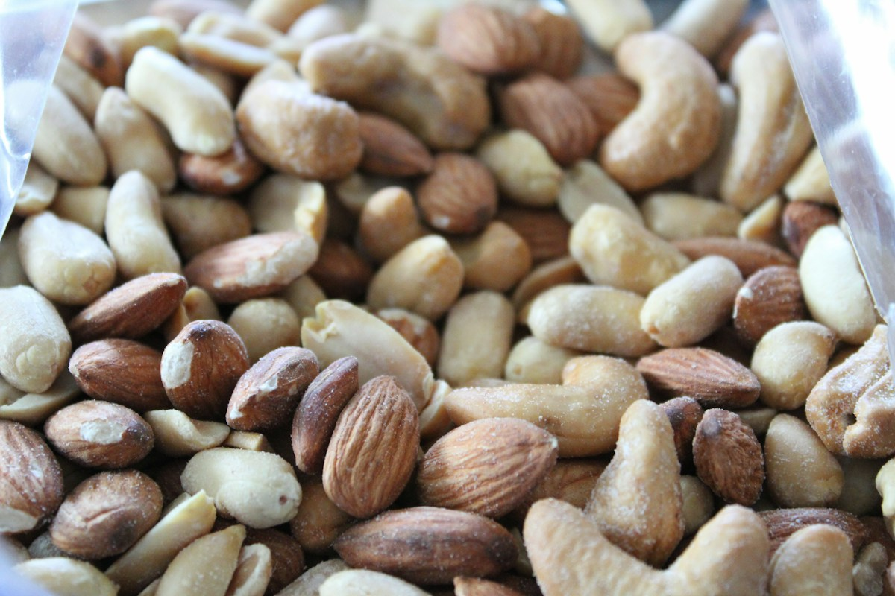
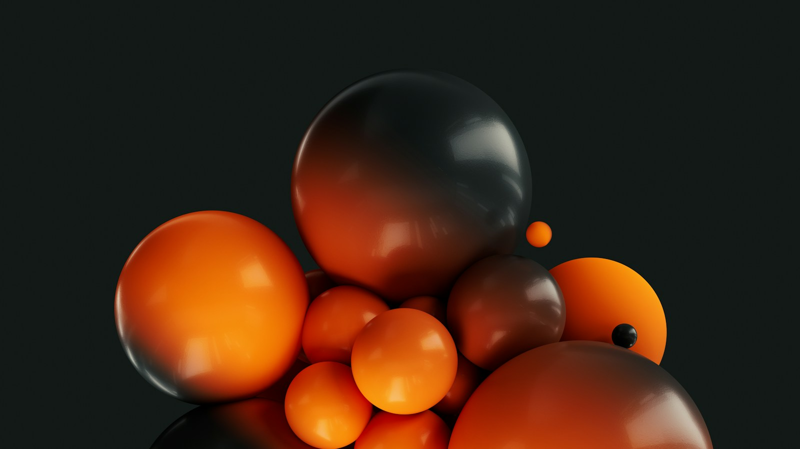
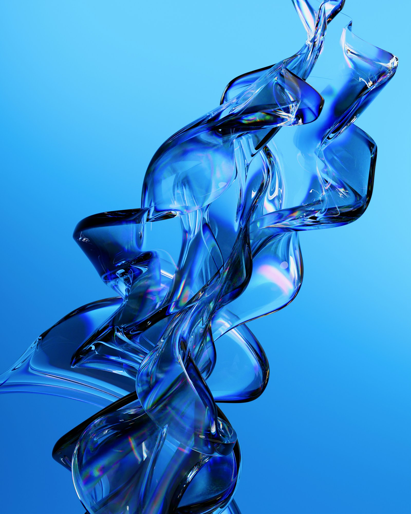

What we test
Toxins

Often traced to old paint dust, ageing plumbing and disturbed soil, lead is one of the most researched environmental elements. It is worth keeping an eye on over time, especially in homes with young children, as studies connect it with development and behaviour.

Carried by cigarette smoke and by some leafy crops grown in affected soil, cadmium is an element where the long view tells you most. Studies link it with kidney and bone health, so watching how it trends gives you a fuller picture.

Nickel shows up in more places than you might expect: stainless cookware, jewellery, and foods like nuts and chocolate. Higher skin contact has been tied to sensitivity, and heavy workplace exposure has been studied for effects on the lungs.

Present naturally in some private wells, in rice, and in older treated timber, arsenic is an element where context really matters. Long-term studies note links with skin, lung and heart health, so seeing where you sit over time is genuinely useful.

Barium appears in some groundwater, in foods such as nuts and grains, and in certain imaging products. At higher levels it has been studied alongside heart rhythm and blood pressure, so a reference point is a helpful place to start.

One of the metals we meet most often, aluminum turns up in cookware, antiperspirants and some antacids. Research has looked at bone and brain health at higher levels, and knowing your position adds a useful layer to the wider picture.
Essentials

Found in nuts, seeds and leafy greens, magnesium is one of the body's busiest minerals, supporting muscles, energy and sleep. Your timeline shows whether your levels held steady across the testing window.

Manganese comes mostly from whole grains, tea and legumes, and the body needs a little of it to build bone and process energy. Too much, often from water or work settings, is worth noticing early.

Copper reaches us through shellfish, nuts and water that has run through copper plumbing. It helps form red blood cells, and both low and high readings are worth a look.

Zinc supports immunity and healing and is found in meat, seeds and many supplements. A sudden rise on your timeline can line up neatly with a new supplement routine.

A trace element at the heart of vitamin B12, cobalt also appears in coloured glass, some alloys and certain implants. Small amounts are expected; patterns over time tell you more.

Phosphorus pairs with calcium to build bone and teeth and is plentiful in dairy, meat and processed foods with phosphate additives. Your report shows how your intake pattern sits against others.

Calcium is the mineral most people know, found in dairy, fortified foods and hard water. Tracking it alongside other elements helps put the rest of your results in context.

Other elements
Lithium occurs naturally in some drinking water and is also prescribed to steady mood. Studies have looked at how it relates to kidney and nerve function over time, so your results give you a personal reference point.

Strontium follows calcium into bone and is found in seafood, some toothpastes and certain mineral waters. It is rarely a worry, but it helps complete the picture.
15 elements
30-day timeline
All measured
elements
explained
| Element | Type | What it is & where it's found |
|---|---|---|
| Magnesium (Mg) | Essential | Nuts, seeds and leafy greens. Found in nuts, seeds and leafy greens, magnesium is one of the body's busiest minerals, supporting muscles, energy and sleep. |
| Manganese (Mn) | Essential | Grains, tea and some well water. Manganese comes mostly from whole grains, tea and legumes, and the body needs a little of it to build bone and process energy. |
| Copper (Cu) | Essential | Plumbing, shellfish and nuts. Copper reaches us through shellfish, nuts and water that has run through copper plumbing. |
| Zinc (Zn) | Essential | Meat, seeds and supplements. Zinc supports immunity and healing and is found in meat, seeds and many supplements. |
| Cobalt (Co) | Essential | Vitamin B12, alloys and pigments. A trace element at the heart of vitamin B12, cobalt also appears in coloured glass, some alloys and certain implants. |
| Phosphorus (P) | Essential | Dairy, meat and food additives. Phosphorus pairs with calcium to build bone and teeth and is plentiful in dairy, meat and processed foods with phosphate additives. |
| Calcium (Ca) | Essential | Dairy, fortified foods and hard water. Calcium is the mineral most people know, found in dairy, fortified foods and hard water. |
| Element | Type | What it is & where it's found |
|---|---|---|
| Lead (Pb) | Toxic | Old paint, ageing pipes and soil. Often traced to old paint dust, ageing plumbing and disturbed soil, lead is one of the most researched environmental elements. |
| Cadmium (Cd) | Toxic | Tobacco smoke, some vegetables and batteries. Carried by cigarette smoke and by some leafy crops grown in affected soil, cadmium is an element where the long view tells you most. |
| Nickel (Ni) | Toxic | Cookware, jewellery, nuts and chocolate. Nickel shows up in more places than you might expect: stainless cookware, jewellery, and foods like nuts and chocolate. |
| Arsenic (As) | Toxic | Well water, rice and treated wood. Present naturally in some private wells, in rice, and in older treated timber, arsenic is an element where context really matters. |
| Barium (Ba) | Toxic | Groundwater, grains and imaging agents. Barium appears in some groundwater, in foods such as nuts and grains, and in certain imaging products. |
| Aluminum (Al) | Toxic | Cookware, antiperspirants and antacids. One of the metals we meet most often, aluminum turns up in cookware, antiperspirants and some antacids. |
| Element | Type | What it is & where it's found |
|---|---|---|
| Lithium (Li) | Other | Drinking water and some medicines. Lithium occurs naturally in some drinking water and is also prescribed to steady mood. |
| Strontium (Sr) | Other | Seafood, toothpaste and mineral water. Strontium follows calcium into bone and is found in seafood, some toothpastes and certain mineral waters. |
Start with a single strand of hair
A 30-day picture of your elemental exposure, with plain guidance to help shape the choices you make every day.
Order your test